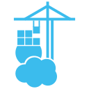
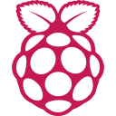

Datei Explorer eingebaut
▾ Homelab
Homelab
▾ docker
docker

portainer.md▸

raspberrypi▾ Smart Home
Smart Home
esphome.md
pihole.md
📄Notizen.md
▾ Monitoring vererbt
Monitoring vererbt
Kinder erben das Ordner Icon blasser, abschaltbar in den Einstellungen. geplant
Notiz – Live Preview (dockhand.md) eingebaut
portainer.md
Tabs mit Icons eingebaut
 Dockhand
Dockhand
{{icon:docker}} läuft auf {{icon:devicon/proxmox}} und {{icon:devicon/raspberrypi|20}}
 läuft auf
läuft auf  und
und
{{icon:simple/homeassistant}} steuert {{icon:simple/esphome}} und {{icon:typo}}
 steuert und [typo]
steuert und [typo]
{{icon:lucide:server|20|blue}} Status: ok
Status: ok eingebaut: Farbe im Shortcode
---
icon: simple/homeassistant
---
icon: simple/homeassistant
---
 Titel Icon aus Frontmatter eingebaut
Titel Icon aus Frontmatter eingebaut